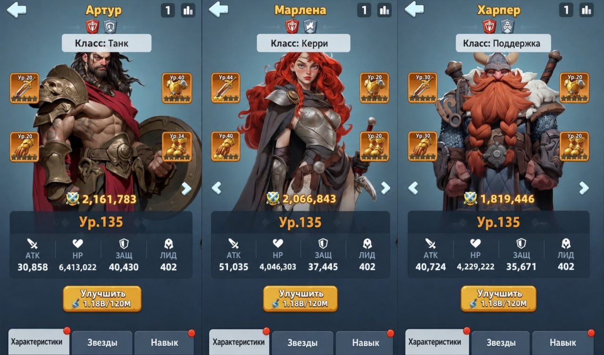
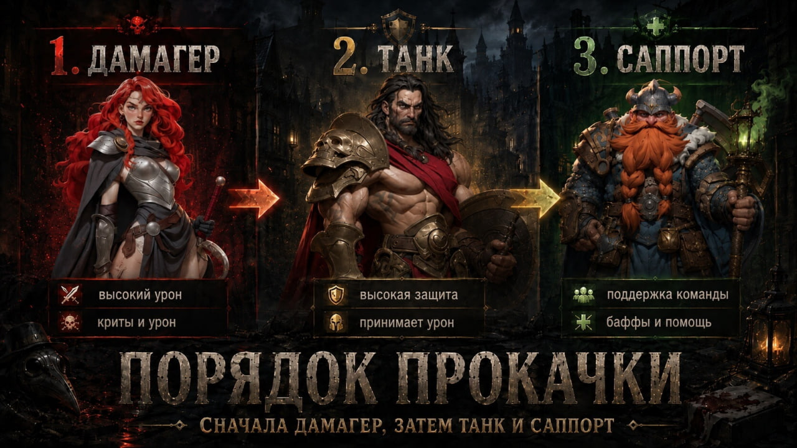
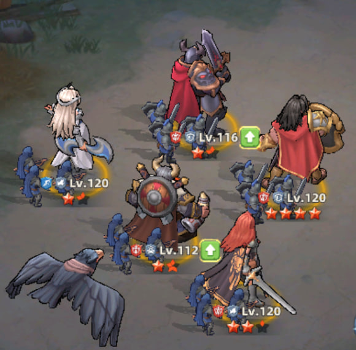

🦸 Герой
Как понять роль героя, кого качать первым и как правильно расставить отряд.
Как понять роль героя
У героя есть иконка роли. Это первый ориентир, на который стоит смотреть.

🛡️ Щит — Танк
Такой герой должен принимать урон, стоять впереди и давать команде время. Его ценность не только в здоровье, но и в защитных навыках, снижении урона, устойчивости и способности удерживать бой.
🔥 Огонь — Дамагер (Carry)
Это герой, который делает больно. Его задача — быстро снимать здоровье врагам, добивать цели и сокращать длительность боя. Чем быстрее умирают враги, тем меньше урона получает ваша команда.
🧪 Бутылка — Саппорт
Саппорт может усиливать союзников, давать баффы, помогать с ресурсами или поддерживать пачку. Но саппорт почти всегда зависит от того, насколько хорошо уже прокачаны остальные.
Порядок прокачки героев
Главное правило: сначала тот, кто двигает бой. Вот базовый порядок, особенно важный для новичка.

Почему именно так?
- Дамагер: чаще всего быстрее всего двигает прогресс. Он добивает врагов, закрывает кампанию, помогает в PvE, даёт результат в событиях и делает вашу пачку опасной. Если у команды нет урона, она может долго держаться, но в итоге всё равно проиграет.
- Танк: идёт вторым, потому что без него дамагер может просто не успеть раскрыться.
- Саппорт: идёт третьим, потому что его баффы работают лучше, когда уже есть сильные герои, которых он усиливает.
Расстановка героев в отряде

Первая линия
На первую линию ставятся только танки (значок щита). Их задача — принимать на себя основной удар врагов и защищать хрупких героев.
Кого ставить:
- Основной танк: Артур — ваш первый и главный защитник.
- Второй танк: Белла — бесплатный напарник Артура для первой линии. Позже её можно заменить на Даскала.
Вторая линия
На вторую линию ставятся дамагеры и саппорты. Они находятся в безопасности за спинами танков и делают свою работу: наносят урон или лечат/усиляют команду.
Кого ставить:
- Основной дамагер: Марлена — ваш главный источник урона, которого нужно беречь и ставить в тыл.
- Второй дамагер: Клэр или Селия — добавляют урон или полезные эффекты.
- Саппорт: Селия на старте, позже её может заменить Харпер — лечит, усиливает союзников или ослабляет врагов.